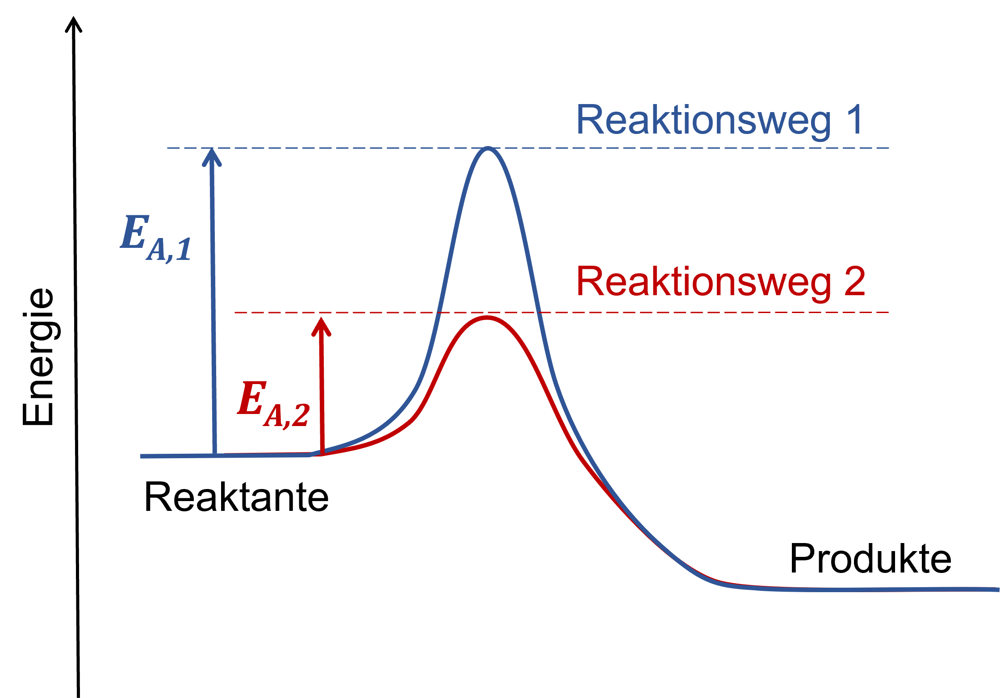

Hilfreiche Informationen
Konstanten:
- Verdampfungsenthalpie von Wasser:
ΔHvap = 43,9 kJ mol-1
- Sublimationsenthalpie von Kohlenstoff:
ΔHsub = 717 kJ mol-1
- Gaskonstante: R = 8,314 J mol-1 K-1
- Coulomb-Konstante: k = 8,99·109 N m2 C-2
Gleichungen:
- Coulombsches Gesetz: F = k (q1q2)/r2
- Gibbs-Energie: ΔGo = ΔHo - T ·ΔSo= - RT·ln(Keq)
- Arrhenius-Gleichung: k = A · e - Ea/RT
- Kinetische Energie und Geschwindigkeit: EK= ½ ·mv2
Fakultative Hinweise
Vorbereitungsfrage 1bEinblenden
Der erste Hauptsatz der Thermodynamik (Prinzip der Energieerhaltung) besagt, dass die innere Energie bei jedem Vorgang in einem abgeschlossenen System konstant bleibt.
Frage 2a-iiiEinblenden
Achten Sie hier besonders darauf, dass in keinem der Teilschritte einzelne O- oder H-Atome als Produkte vorkommen.
Frage 2cEinblenden
Vergleichen Sie den Aggregatzustand der Moleküle in der Simulation mit ihrem Aggregatzustand in einer realen Verbrennungsreaktion.
Frage 2eEinblenden
Ihre Antwort bei 2a-ii könnte hier hilfreich sein. Überprüfen Sie jedoch, dass Sie den richtigen "Standardzustand" von Kohlenstoff verwenden und, dass die Reaktion in die richtige Richtung läuft!
Frage 5cEinblenden
Die Aktivierungsenergie einer Reaktion ist abhängig von dem Weg, worüber die Reaktion abläuft.

Frage 7bEinblenden
Beachten Sie, dass ein Gleichgewicht sowohl eine Hin- als auch eine Rückreaktion umfassen muss!
Frage 7dEinblenden
Verwenden Sie ein Periodensystem, um die molare Masse von AgCl zu bestimmen.
Frage 9Einblenden
Für die Beantwortung dieser Frage wird eventuell die oben genannte Definition der Gibbs-Energie hilfreich sein.